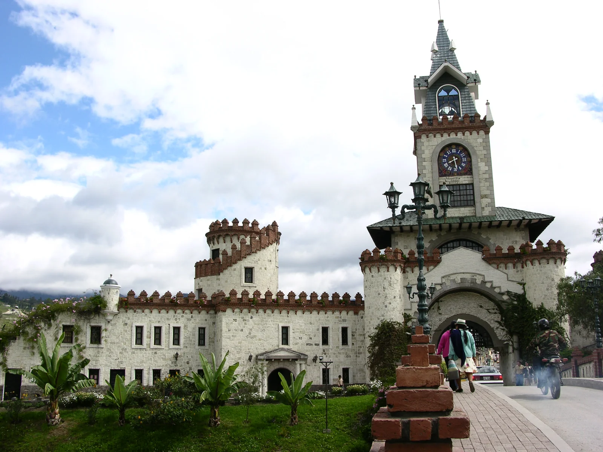

LOJA, UN DESTINO PARA VOLVERTu próxima historia
Tu próxima historia
empieza en Loja.
16 cantones para salir de la rutina. Encuentra tu destino, abre su guía y descubre lo que te espera.
Explorar los 16 cantones ↓
Puerta de la Ciudad, Loja · The lifted lorax · Dominio públicoDESCUBRE LA PROVINCIA
Un destino para cada escapada.
¿Qué cantón quieres conocer? Escoge uno para abrir su página y explorar sus lugares, gastronomía y negocios.
01 — ELIGE TU DESTINO
Cada tarjeta abre una guía con lugares, sabores y rutas por descubrir.